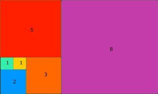

Perimeter of squares in a rectangle
Points: 5 kyu
Kata ID: 559a28007caad2ac4e000083
The drawing shows 6 squares the sides of which have a length of 1, 1, 2, 3, 5, 8.
It's easy to see that the sum of the perimeters of these squares is :
4 * (1 + 1 + 2 + 3 + 5 + 8) = 4 * 20 = 80
Could you give the sum of the perimeters of all the squares in a rectangle when there are n + 1 squares disposed in the same manner as in the drawing:

Hint:
See Fibonacci sequence
Ref:
The function perimeter has for parameter n where n + 1 is the number of squares (they are numbered from 0 to n) and returns the total perimeter of all the squares.
perimeter(5) should return 80
perimeter(7) should return 216